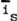
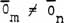

|
-- SCALARS AND VECTORS HAVE SUBSTRUCTURES --
As can now be seen, the sum of each structure in figure 13 is observably
zero. Therefore we might define the sum as a "zero spatial
vector." We note, however, that it actually exists for a time
Δt and is thus a spatiotemporal entity,
rigorously.
and the 4-space internal stress intensity or potential as
where  is any internal vector in the substructure, Δs3 is the spatial volume (about a point) containing vector , and Δt is the inseparable time during which these component actions occurred, then we see that, stress-wise, all the "zero-vectors" in figure 13 are quite different in their internal stresses, 4-space potentials, and internal substructures. For the five "zero sum" vectors, OBSERVABLY we have
whether or not
But considering the substructures,
 (1 ≤ m ≤ 5; 1 ≤ n ≤ 5; m ≠ n) (33)
I now point out that a scalar can be regarded as a stressed zero-sum
vector, where the magnitude S of the scalar represents the internal
stress intensity caused by the substructure of the zero-vector.
That is, in general any observable scalar has, consists of, and is
comprised of a VIRTUAL (unobservable) substructure that is very real indeed.
One must also consider the scalar as existing for some finite time Δt, (at least for the time of one quantum change), and the intensity of the virtual actions occurring in the spatiotemporal substructure of the scalar during that time
Δt is proportional to the magnitude of the scalar.
and that all 's
are evenly distributed. That is, from this new viewpoint, presently the
mathematical theory assumes all scalars to have an equal density of virtual
activity per spatiotemporal volume in its virtual substructure, and an isotropic
virtual pattern distribution of an infinite number of equal virtual vectors in
its 4-space substructure.28
or
by the following means: In the first case (equation 36), we assume that the virtual substructures are patterned, and interact nonlinearly in such a way as to produce an extra observable. Thus we have a delta added to the normal observable scalar results of the interaction, as follows:
where subscript "o" means observable and "v" means virtual. Note that
indicates a delta due to virtual substructure interactions yielding an extra observable delta.
This extra delta may be either scalar or vector in
nature, depending on the circumstances and the particular interactions. |